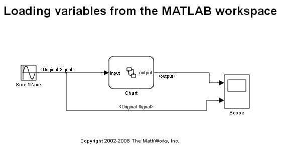
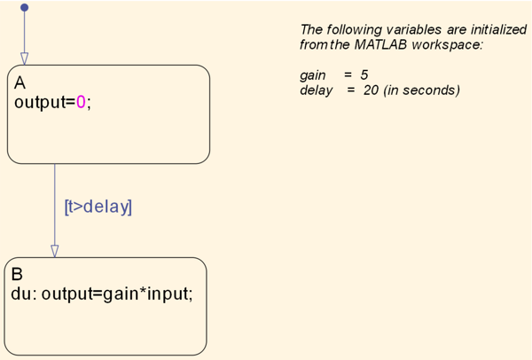
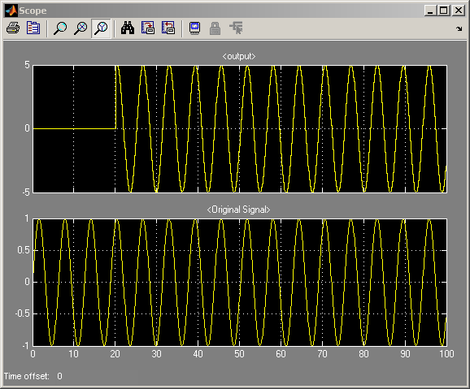
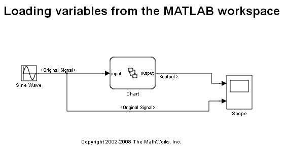
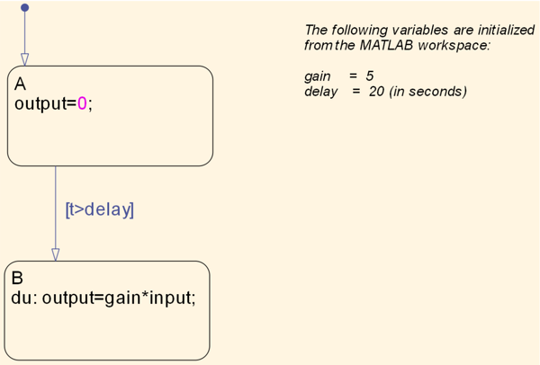
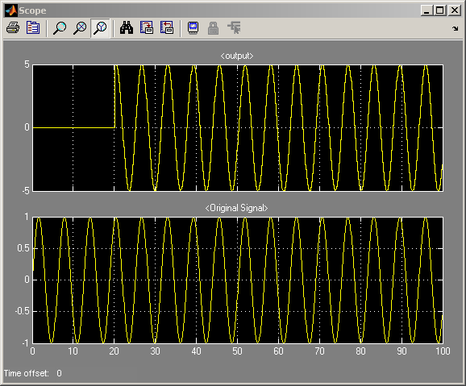

ワークスペースからのデータ
このデモでは、Stateflow® チャートで MATLAB® ワークスペースからの変数を使用する方法を示します。変数 delay と gain はローカル変数で、その初期値は "Parameter" として定義されます。このような変数に関しては、Stateflow はベース MATLAB ワークスペースから初期値を取得します。
  このデモでは、Stateflow® チャートで MATLAB® ワークスペースからの変数を使用する方法を示します。変数 delay と gain はローカル変数で、その初期値は "Parameter" として定義されます。このような変数に関しては、Stateflow はベース MATLAB ワークスペースから初期値を取得します。
  